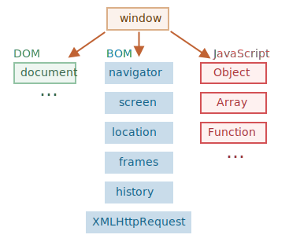

Le langage JavaScript a été initialement créé pour les navigateurs web.
Depuis, il a évolué et est devenu un langage aux multiples utilisations et plateformes.
Une plateforme peut être un navigateur, ou un serveur Web ou tout autre hôte (une machine à café moderne, si elle peut exécuter JavaScript). Chacun d’entre eux fournit des fonctionnalités spécifiques à la plate-forme. La spécification JavaScript appelle cela un environnement hôte.Un environnement hôte fournit ses propres objets et fonctions en plus du noyau du langage. Les navigateurs Web permettent de contrôler les pages Web. Node.js fournit des fonctionnalités côté serveur, etc. Voici une vue globale de ce que nous avons lorsque JavaScript s’exécute dans un navigateur Web :
Il existe un objet “racine” appelé "window". Il a 2 rôles :
Par exemple, nous l’utilisons ici comme un objet global :
function sayHi()
{
alert("Hello");
}
// les fonctions globales sont des méthodes de l'objet global :
window.sayHi();
Et nous l’utilisons ici comme une fenêtre du navigateur pour voir la hauteur de la fenêtre :
alert(window.innerHeight); // hauteur de la fenêtre intérieure
document.write("Hauteur de la fenêtre intérieure : " + window.innerHeight);
Il y a d’autres méthodes et propriétés spécifiques à la fenêtre, nous les étudierons plus tard.
Document Object Model, ou DOM en abrégé, représente tout le contenu de la page sous forme d’objets pouvant être modifiés.
L’objet document est le “point d’entrée” principal de la page. Nous pouvons changer ou créer n’importe quoi sur la page
en l’utilisant.
Par exemple :
// change la couleur de fond en bleu
document.body.style.background = "#005090";
// réinitialisation après 1 seconde
setTimeout(() => document.body.style.background = "", 1000);
Le "modèle d’objet du navigateur" (BOM en anglais) contient des objets supplémentaires fournis par le navigateur (l’environnement hôte) pour travailler avec tout ce qui ne correspond pas à l'objet "document".
Par exemple :
document.write("URL actuelle : " + location.href); // affiche l'URL actuelle
if (confirm("Go to Wikipedia?")) {
location.href = "https://wikipedia.org"; // rediriger le navigateur vers une autre URL
}